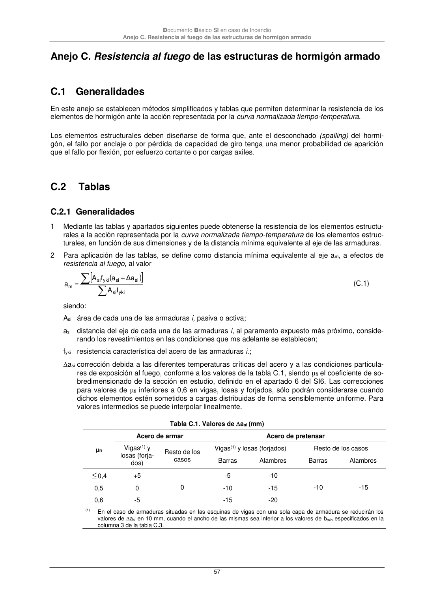
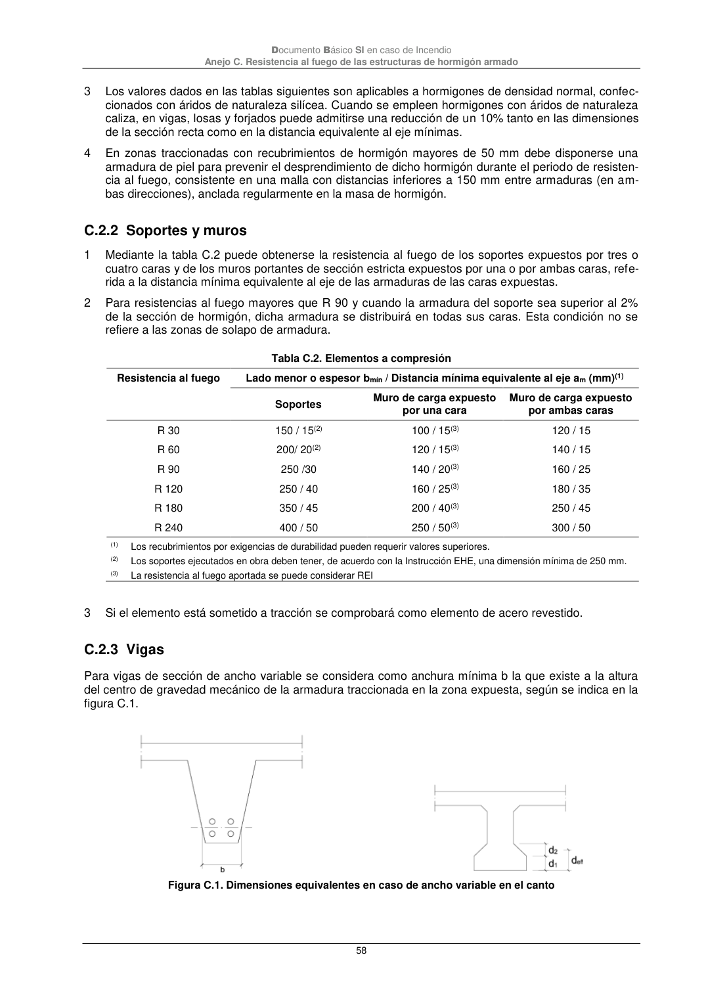

DB-SI Seguridad en caso de incendio · edición 2025-03-04 · capa oficial
Documento DB-SI-oficial · SHA-256 del PDF 0a2e78cd62471d9cc5cfe2efbc6aa39fdbad73c124aea7b039f9de96c141e105
Copia fiel del PDF fuente · Fuente oficial
Ficha de la disposición en la fuente oficial
Formatos: JSON del segmento · Markdown
yki si si si yki si m f A Δa a f A a (C.1) siendo: Asiárea de cada una de las armaduras i, pasiva o activa; asidistancia del eje de cada una de las armaduras i, al paramento expuesto más próximo, conside- rando los revestimientos en las condiciones que ms adelante se establecen; fykiresistencia característica del acero de las armaduras i.; asicorrección debida a las diferentes temperaturas críticas del acero y a las condiciones particula- res de exposición al fuego, conforme a los valores de la tabla C.1, siendo fiel coeficiente de so- bredimensionado de la sección en estudio, definido en el apartado 6 del SI6. Las correcciones para valores de fi inferiores a 0,6 en vigas, losas y forjados, sólo podrán considerarse cuando dichos elementos estén sometidos a cargas distribuidas de forma sensiblemente uniforme. Para valores intermedios se puede interpolar linealmente. Tabla C.1. Valores de asi (mm) fi Acero de armar Acero de pretensar Vigas(1) y losas (forja- dos) Resto de los casos Vigas(1) y losas (forjados) Resto de los casos Barras Alambres Barras Alambres 0,4 +5 0 -5 -10 -10 -15 0,5 0 -10 -15 0,6 -5 -15 -20 (1) En el caso de armaduras situadas en las esquinas de vigas con una sola capa de armadura se reducirán los valores de asi en 10 mm, cuando el ancho de las mismas sea inferior a los valores debmin especificados en la columna 3 de la tabla C.3. Documento Básico SI en caso de Incendio Anejo C. Resistencia al fuego de las estructuras de hormigón armado 58 3 Los valores dados en las tablas siguientes son aplicables a hormigones de densidad normal, confec- cionados con áridos de naturaleza silícea. Cuando se empleen hormigones con áridos de naturaleza caliza, en vigas, losas y forjados puede admitirse una reducción de un 10% tanto en las dimensiones de la sección recta como en la distancia equivalente al eje mínimas. 4 En zonas traccionadas con recubrimientos de hormigón mayores de 50 mm debe disponerse una armadura de piel para prevenir el desprendimiento de dicho hormigón durante el periodo de resisten- cia al fuego, consistente en una malla con distancias inferiores a 150 mm entre armaduras (en am- bas direcciones), anclada regularmente en la masa de hormigón.

